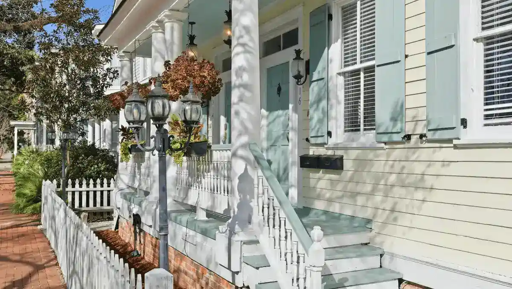
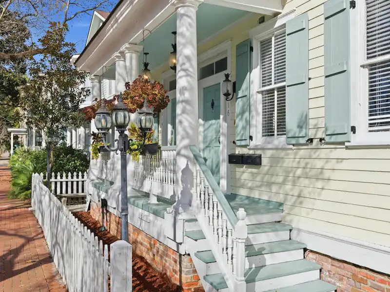

St. Patrick's Day Parade Location — Front Row Seats at The Wilder House
Most people experience Savannah’s St. Patrick’s Day from a sidewalk on Bull Street or Bay Street. That’s the parade in motion — floats, bands, the crowd ten deep on both sides. What they never see is what happens at the beginning, hours before the first spectator finds a spot.
East Park Avenue is near where the parade forms. Thousands of participants — bands, families who have marched in this celebration for generations, organizations that take the day seriously — organize, take their positions, and wait. The atmosphere before the parade steps off is one of the most authentic things Savannah does. Not staged for visitors, not curated for anyone. Just a city doing what it does on the day it loves most.
Your suite is right there for all of it. Then the parade moves, the city erupts, and you can walk straight to viewing spots along the route. Two experiences in one morning — and most guests who stay for St. Patrick’s Day say the first one is the one they remember.
Why East Park Avenue is the Best St. Patrick's Day Location
East Park Avenue sits at the beginning of the route, not the middle. Guests see the celebration being assembled — the part of parade day most visitors never witness. Once it moves, the route is a short walk.
One dedicated off-street spot per suite, included with every booking. On St. Patrick’s Day, when city streets are restricted and garages fill early, a reserved private spot is genuinely rare. Note: guests may need to show their Airbnb confirmation to access the lot.
King bed and queen bed, one full bath, fully stocked kitchen. Room to get ready, cook a proper breakfast before the parade, and come back to something comfortable after a long day.
Suite 314A and Suite 316A together: 4 bedrooms, 2 full kitchens, 2 baths, 2 private parking spots. The right setup for a group that wants to be in the middle of it without splitting up across the city.
Three consecutive years as a Superhost. 209 verified reviews. The host knows Savannah — including exactly how St. Patrick’s Day works, what to expect, and how to make sure guests are set up well before it starts.
Both suites have fully stocked kitchens. A real breakfast before the parade is better than standing in line at a restaurant that’s also trying to serve half of Savannah at 8 AM on parade day.
Two St. Patrick's Day Suites — Private Parking Included

Suite 314A
From $195 / night
Original heart-pine floors, soaring 11-foot ceilings, and three blocks to Forsyth Park. Fully stocked kitchen, private off-street parking. One of Savannah’s highest-rated historic vacation rentals.
View Suite 314A
Suite 316A
From $195 / night
Haint blue kitchen island, original fireplace, ornate Victorian millwork. Three blocks from Forsyth Park in Savannah’s most storied neighborhood. Fully stocked kitchen, private parking included.
View Suite 316A
Book Both Suites
From $395 / night — 4 beds, 2 kitchens
Both suites, side by side in the same 1898 building. Four bedrooms, two full kitchens, two baths, two private parking spots. The full Wilder House experience — the best way to bring a group to Savannah.
View Group DetailsSt. Patrick's Day Rental FAQ
Where is The Wilder House relative to the parade?
On East Park Avenue, near the beginning of the parade route. Parade participants gather and organize in the area in the early morning hours. Guests experience the celebration being assembled before it ever steps off — then walk to viewing spots once the parade moves.
Is private parking really available on parade day?
Yes — one dedicated off-street spot per suite, included in every reservation. Because East Park Avenue sees significant street activity on parade day, guests may be asked to show their Airbnb booking confirmation to access the lot. Have it ready on your phone when you arrive.
How early does it start outside?
Early. Participants begin assembling near East Park Avenue well before the ~10:15 AM step-off. Bands warm up, groups organize, the energy builds for hours. If you want to see the beginning of all of it, set an early alarm.
Can we book both suites for a larger group?
Yes. Suite 314A and Suite 316A together: 4 bedrooms, 2 full kitchens, 2 baths, 2 private parking spots — sleeps 8. The suites are side by side in the same 1898 building. See the group rental page for details.
What time does the parade step off?
Typically around 10:15 AM. Activity near East Park Avenue starts hours before that. The parade itself runs for several hours once it’s underway — the day is long and the city stays lively well into the evening.
Do we need to book far in advance?
Yes. St. Patrick’s Day dates in Savannah book out months in advance — often by January. Both suites at The Wilder House are typically reserved well ahead of parade weekend. If you’re considering it, check availability now.
What makes this different from other Savannah St. Patrick’s Day rentals?
Location and private parking. East Park Avenue puts you near the beginning of the route — where the celebration forms, not just where it passes. Private off-street parking is included with every suite, which is rare during St. Patrick’s Day when streets are restricted and garages fill early.
Is this good for first-time visitors on St. Patrick’s Day?
It is a genuine Savannah St. Patrick’s Day experience. Guests who have been before specifically seek out this address because of where it sits. If this is your first time and you want to be inside the real thing — not watching from a hotel lobby — The Wilder House puts you there.
Reserve Your St. Patrick's Day Rental in Savannah Now
Both suites are typically reserved well ahead of parade weekend. Check availability now before the dates you want are gone.